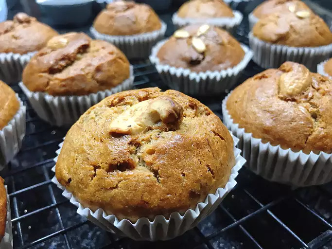

Vegan Banana Muffins

Description
These vegan banana muffins are moist and yummy. You can't tell at all that these muffins don't have any dairy or eggs. My kids and husband polish them off as soon as they are out of the oven!
Ingredients
- 3 cups all-purpose flour
- 1 cup white sugar
- ½ cup brown sugar
- 2 teaspoons ground cinnamon
- 2 teaspoons baking powder
- 1 teaspoon baking soda
- 1 teaspoon ground nutmeg
- 1 teaspoon salt
- 2 cups mashed ripe bananas
- 1 cup canola oil
- 1 cup coconut milk
Steps
- Preheat the oven to 350 degrees F (175 degrees C). Grease 12 muffin cups or line with paper liners.
- Mix flour, white sugar, brown sugar, cinnamon, baking powder, baking soda, nutmeg, and salt together in a large bowl. Stir bananas, canola oil, and coconut milk together in a separate bowl; stir banana mixture into flour mixture until just combined. Divide batter among the muffin cups, filling each about 3/4 full.
- Bake in the preheated oven until a toothpick inserted into the center of a muffin comes out clean, 30 to 35 minutes.